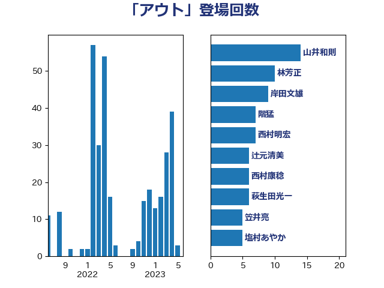

単語「アウト」

| 山井和則 | 立憲民主党 | 18 回 |
| 萩生田光一 | 自由民主党 | 11 回 |
| 階猛 | 立憲民主党 | 8 回 |
| 伊波洋一 | 無所属 | 6 回 |
| 小泉進次郎 | 自由民主党 | 6 回 |
| 田村貴昭 | 日本共産党 | 6 回 |
| 赤羽一嘉 | 公明党 | 6 回 |
| 国光あやの | 自由民主党 | 5 回 |
| 塩村あやか | 立憲民主党 | 5 回 |
| 林芳正 | 自由民主党 | 5 回 |
| 笠井亮 | 日本共産党 | 5 回 |
| 長妻昭 | 立憲民主党 | 5 回 |
| 山下芳生 | 日本共産党 | 4 回 |
| 山岡達丸 | 立憲民主党 | 4 回 |
| 滝波宏文 | 自由民主党 | 4 回 |
| 田中健 | 国民民主党 | 4 回 |
| 足立康史 | 日本維新の会 | 4 回 |
| 三浦信祐 | 公明党 | 3 回 |
| 中島克仁 | 立憲民主党 | 3 回 |
| 仁木博文 | 無所属 | 3 回 |
| 吉川沙織 | 立憲民主党 | 3 回 |
| 宮本徹 | 日本共産党 | 3 回 |
| 寺田学 | 立憲民主党 | 3 回 |
| 小沼巧 | 立憲民主党 | 3 回 |
| 山添拓 | 日本共産党 | 3 回 |
| 打越さく良 | 立憲民主党 | 3 回 |
| 杉久武 | 公明党 | 3 回 |
| 杉尾秀哉 | 立憲民主党 | 3 回 |
| 横沢高徳 | 立憲民主党 | 3 回 |
| 源馬謙太郎 | 立憲民主党 | 3 回 |
| 玄葉光一郎 | 立憲民主党 | 3 回 |
| 白石洋一 | 立憲民主党 | 3 回 |
| 細田健一 | 自由民主党 | 3 回 |
| 中谷一馬 | 立憲民主党 | 2 回 |
| 古川禎久 | 自由民主党 | 2 回 |
| 吉良州司 | 無所属 | 2 回 |
| 宮本岳志 | 日本共産党 | 2 回 |
| 後藤祐一 | 立憲民主党 | 2 回 |
| 梶山弘志 | 自由民主党 | 2 回 |
| 清水貴之 | 日本維新の会 | 2 回 |
| 片山大介 | 日本維新の会 | 2 回 |
| 石井章 | 日本維新の会 | 2 回 |
| 舟山康江 | 国民民主党 | 2 回 |
| 舩後靖彦 | れいわ新選組 | 2 回 |
| 茂木敏充 | 自由民主党 | 2 回 |
| 薗浦健太郎 | 自由民主党 | 2 回 |
| 長浜博行 | 無所属 | 2 回 |
| 一谷勇一郎 | 日本維新の会 | 1 回 |
| 井坂信彦 | 立憲民主党 | 1 回 |
| 伊藤俊輔 | 立憲民主党 | 1 回 |
| 住吉寛紀 | 日本維新の会 | 1 回 |
| 前原誠司 | 国民民主党 | 1 回 |
| 前川清成 | 日本維新の会 | 1 回 |
| 古川元久 | 国民民主党 | 1 回 |
| 国定勇人 | 自由民主党 | 1 回 |
| 城井崇 | 立憲民主党 | 1 回 |
| 大串博志 | 立憲民主党 | 1 回 |
| 大串正樹 | 自由民主党 | 1 回 |
| 大塚耕平 | 国民民主党 | 1 回 |
| 奥野総一郎 | 立憲民主党 | 1 回 |
| 室井邦彦 | 日本維新の会 | 1 回 |
| 宮口治子 | 立憲民主党 | 1 回 |
| 寺田静 | 無所属 | 1 回 |
| 小島敏文 | 自由民主党 | 1 回 |
| 小川淳也 | 立憲民主党 | 1 回 |
| 小熊慎司 | 立憲民主党 | 1 回 |
| 小野田紀美 | 自由民主党 | 1 回 |
| 山岸一生 | 立憲民主党 | 1 回 |
| 山崎誠 | 立憲民主党 | 1 回 |
| 山本博司 | 公明党 | 1 回 |
| 山田美樹 | 自由民主党 | 1 回 |
| 山田賢司 | 自由民主党 | 1 回 |
| 山際大志郎 | 自由民主党 | 1 回 |
| 岩渕友 | 日本共産党 | 1 回 |
| 岸田文雄 | 自由民主党 | 1 回 |
| 木村次郎 | 自由民主党 | 1 回 |
| 本田太郎 | 自由民主党 | 1 回 |
| 枝野幸男 | 立憲民主党 | 1 回 |
| 柘植芳文 | 自由民主党 | 1 回 |
| 柿沢未途 | 無所属 | 1 回 |
| 梅村みずほ | 日本維新の会 | 1 回 |
| 梅村聡 | 日本維新の会 | 1 回 |
| 河野義博 | 公明党 | 1 回 |
| 浅野哲 | 国民民主党 | 1 回 |
| 牧島かれん | 自由民主党 | 1 回 |
| 牧義夫 | 立憲民主党 | 1 回 |
| 石川博崇 | 公明党 | 1 回 |
| 石川香織 | 立憲民主党 | 1 回 |
| 神田憲次 | 自由民主党 | 1 回 |
| 福島みずほ | 社会民主党 | 1 回 |
| 篠原孝 | 立憲民主党 | 1 回 |
| 自見はなこ | 自由民主党 | 1 回 |
| 荒井優 | 立憲民主党 | 1 回 |
| 菅義偉 | 自由民主党 | 1 回 |
| 藤川政人 | 自由民主党 | 1 回 |
| 谷川とむ | 自由民主党 | 1 回 |
| 赤澤亮正 | 自由民主党 | 1 回 |
| 越智隆雄 | 自由民主党 | 1 回 |
| 足立敏之 | 自由民主党 | 1 回 |
| 辻清人 | 自由民主党 | 1 回 |
| 近藤和也 | 立憲民主党 | 1 回 |
| 里見隆治 | 公明党 | 1 回 |
| 重徳和彦 | 立憲民主党 | 1 回 |
| 野上浩太郎 | 自由民主党 | 1 回 |
| 長谷川岳 | 自由民主党 | 1 回 |
| 阿部知子 | 立憲民主党 | 1 回 |
| 青柳陽一郎 | 立憲民主党 | 1 回 |
| 高橋はるみ | 自由民主党 | 1 回 |
| 高橋千鶴子 | 日本共産党 | 1 回 |
| 鬼木誠 | 立憲民主党 | 1 回 |
| 麻生太郎 | 自由民主党 | 1 回 |